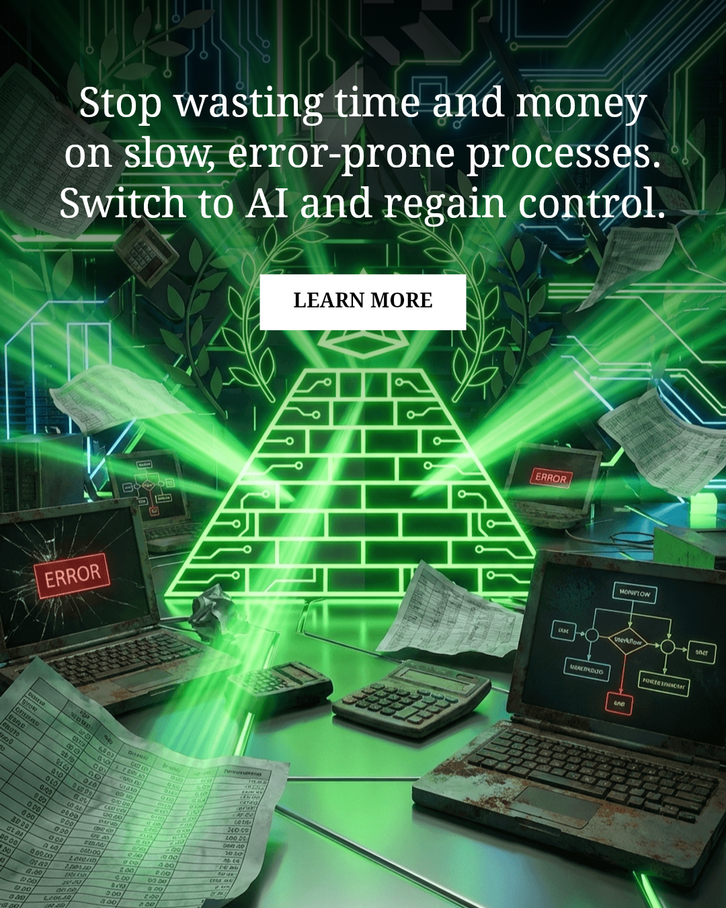

Conectamos datos, reglas y decisiones para que la operativa deje de depender de memoria y heroicidades.
Base operativa: Zaragoza | ejecución en toda España
Tu empresa no necesita más herramientas. Necesita sistema.
Archon Consultancies es una consultoría de IA en Zaragoza que diseña Digital Brain Infrastructure para pymes, ecommerce y empresas de servicios que quieren reducir fricción operativa y escalar con sistema.
Presencial en Zaragoza
Roadmap inicial en 72h
Sin humo ni capas innecesarias
Automatizamos validaciones, handoffs y seguimiento para recuperar horas y bajar latencia de reacción.
Diseñamos infraestructura que aguanta más volumen sin convertir cada semana en un incendio nuevo.
Si hay encaje, devolvemos una dirección clara y un orden de implantación rápido.
Datos, automatización e IA con supervisión. Ni más ni menos de lo que hace falta.
Base en Zaragoza para trabajar cerca cuando la operativa lo pide.
La meta es que el negocio reaccione con sistema, no con cansancio humano.
Rutas de entrada
Tres puertas de entrada. Una misma tesis.
Si vienes buscando consultoría de IA, una agencia de IA o automatización para tu empresa, la promesa es la misma: menos fricción, mejor criterio y una operativa que no se cae cuando sube el volumen.
Consultoría de IA
Para empresas que necesitan ordenar prioridades, detectar fugas operativas y decidir qué automatizar primero sin comprar más ruido.
Ver consultoríaAgencia de IA
Para equipos que ya quieren pasar a ejecución: integraciones, agentes, flujos y control de extremo a extremo.
Ver agenciaAutomatización con IA
Para negocios con cuello de botella en ventas, soporte o backoffice y necesidad de reaccionar más rápido con menos carga manual.
Ver automatizaciónEl problema
Las empresas no se frenan por falta de ganas. Se frenan por fricción.
Pedidos, aprobaciones, seguimientos, incidencias, correcciones y datos repartidos. El coste no siempre se ve en una factura. Se ve en retrasos, decisiones lentas y equipos que hacen de pegamento humano.
01
Trabajo manual oculto
Revisar, copiar, validar y perseguir información consume horas buenas sin parecer un problema gigante hasta que miras el coste total.
02
Herramientas sin cerebro
Shopify, email, ERP, CRM, WhatsApp o hojas sueltas. Todo existe, pero ninguna pieza gobierna el flujo completo.
03
Dependencia de personas clave
Si una persona se satura o falta, la operativa pierde memoria. Eso no es resiliencia. Es fragilidad estructural.
04
Reacción tardía
Los fallos se detectan cuando ya han costado dinero, reputación o equipo. Y entonces toca apagar fuegos con más improvisación.
La solución
Archon instala un Digital Brain operativo
No es una web bonita ni un prompt pegado con cinta. Es una capa que observa lo que ocurre, decide con contexto y activa la siguiente acción correcta con supervisión humana donde toca.

Fuente única de verdad
Pedidos, clientes, estados, incidencias y señales operativas salen del caos de paneles y hojas desconectadas.
Raíles de automatización
Las acciones repetitivas se ejecutan con reglas, disparadores y trazabilidad, no a golpe de memoria o urgencia.
IA con criterio
Clasificar, priorizar, resumir, validar y preparar respuestas útiles donde la IA ahorra tiempo de verdad.
Supervisión y control
Dashboards, alertas y reglas de excepción para que el sistema no sea una caja negra ni un riesgo operativo.
Sectores
La misma arquitectura. Diferente cuello de botella.
No vendemos soluciones genéricas. Cambia el sector, cambia la fricción. Por eso la auditoría empieza por entender dónde se rompen las cosas en tu caso y no en una presentación de PowerPoint.
Lectura local
Si vendes online desde Zaragoza, la fricción aparece cuando ventas y operaciones dejan de ir al mismo ritmo.
Tu stack puede ser bueno. El problema es la distancia entre herramienta y acción. Cuando una validación, una incidencia o una notificación tarda más de lo que debería, el negocio pierde margen y claridad.
Punto 01
Entrada limpia del pedido y su contexto.
Punto 02
Reglas para pagos, stock, fraude o excepciones.
Punto 03
Notificaciones y soporte con información consistente.
Resultado esperado
Menos tiempo persiguiendo estados, menos incidencias sin dueño y una operativa que soporta más volumen sin añadir desorden.
Lo que suele pasar
No necesitas automatizarlo todo. Necesitas automatizar la parte correcta.
Hay empresas que necesitan un radar y otras que ya necesitan construcción. Archon trabaja con una secuencia simple: detectar fuga, ordenar el flujo, poner raíles y después añadir IA donde multiplica criterio y velocidad.
Mapear el punto exacto donde las incidencias entran sin estructura y obligan a reaccionar tarde.
Herramientas nuevas antes de tener un flujo de decisiones claro.
Proceso Archon
No empezamos por herramientas. Empezamos por secuencia.
La venta de verdad no está en decirte que la IA puede hacer mil cosas. Está en marcar un orden inteligente para que empieces por donde el retorno y el control son más reales.
Fase 01
Radar de fricción operativa
Revisamos proceso, herramientas, personas clave, excepciones y bloqueos. La idea no es impresionarte, sino decidir si conviene construir algo, empezar por una automatización concreta o no tocar nada todavía.
Mapa de puntos de fricción y latencia.
Hipótesis de ahorro, riesgo y orden de prioridad.
Decisión clara sobre el siguiente paso.
Base local
Desde Zaragoza. Con cabeza de sistema.
Si estás en Zaragoza o en Aragón, podemos trabajar en una lectura más cercana del negocio. Si no, operamos perfectamente en remoto con equipos de toda España. El valor no es la videollamada. El valor es la arquitectura que queda después.
Para quién encaja
Pymes, ecommerce y equipos operativos que ya no quieren sostener su crecimiento con heroísmo.
Archon encaja especialmente bien cuando ya existe negocio, hay fricción real y alguien del equipo está absorbiendo demasiada complejidad operativa porque el sistema todavía no gobierna el flujo.
Sesiones de discovery y auditoría con contexto local cuando conviene sentarse delante del proceso real.
La construcción se puede ejecutar desde cualquier parte de España con la misma disciplina si el flujo y las fuentes están claros.
No hacemos IA por moda. Trabajamos donde ventas, soporte, cobros u operaciones tienen una fuga concreta y medible.
ROI simulator
Ponle una cifra a tu fuga operativa
Este simulador no sustituye una auditoría seria, pero sirve para ver en minutos si el coste oculto ya justifica moverse. Cambia el sector, mueve los parámetros y mira cómo cambia el impacto.
Parámetros
Radiografía express para empresas con fricción real
Tomamos actividad mensual, carga manual e incidencias que obligan a intervenir. Con eso estimamos tiempo tragado, coste repetido y potencial de recuperación.
Pedidos, tickets, expedientes, validaciones o tareas recurrentes que pasan por manos humanas.
Tiempo invertido entre revisar, copiar, confirmar, perseguir o corregir.
Coste aproximado del tiempo operativo, directivo o de soporte absorbido por esa fricción.
Errores, excepciones o casos que obligan a intervenir fuera del flujo normal.
Impacto estimado
8.112 EUR
Con este escenario, una parte importante del margen se va en tiempo operativo y excepciones que un sistema bien diseñado puede absorber o recortar.
676 EUR / mes
42 h recuperables / mes
Prioridad: flujo de incidencias
Urgencia alta
Encaje
Cuando si. Cuando no.
Una buena web de marketing también filtra. No todo negocio necesita una capa Archon ahora mismo. Si no hay fricción real o no hay voluntad de ordenar el proceso, lo más honesto es no avanzar.
Negocio con volumen, fricción y necesidad de criterio
Ya existe actividad suficiente para que el trabajo manual se note en coste, tiempo o errores.
El equipo quiere control, no solo más herramientas.
Hay ganas de implantar una secuencia clara y medir lo que se mueve.
El fundador quiere salir de la microgestion operativa.
Negocio sin flujo todavía o buscando magia rápida
La operativa aún es demasiado pequeña para justificar una capa adicional.
Se busca una solución de IA solo por imagen o moda.
No existe voluntad de revisar procesos, responsables y reglas.
Se quiere automatizar antes de ordenar la fuente de verdad.
Editorial
La web ya no termina en la home. Ahora también tiene firma.
Aquí vive la parte editorial de Archon: la empresa, el fundador, el blog y una grieta deliberada llamada 33. Sirve para vender mejor, posicionar mejor y dejar claro quién firma lo que dice.
Blog Archon
Ideas sobre IA, automatización, ecommerce, operaciones y criterio de negocio firmadas por Pablo Alcocer Hurtado, PAH y Archon.
Ir al blogSobre Archon
La historia del proyecto, su misión, su enfoque y por qué la auditoría de 33 minutos es la primera puerta de entrada.
Leer la historiaPablo Alcocer Hurtado
Perfil público de PAH, GADU y la lógica personal detrás de Archon Consultancies.
Ver perfil33
Un ensayo aparte sobre masonería, simbolismo oculto y arquetipos de Jung para lectores que sepan encontrar la grieta.
Abrir 33FAQ
Preguntas normales. Respuestas directas.
La venta de Archon no debería depender de misterio. Si esto tiene sentido para tu empresa, tiene que verse claro antes de una propuesta.
¿Qué hace exactamente Archon?
Analizamos fricción operativa, diseñamos la arquitectura correcta y ejecutamos automatización e IA donde realmente bajan carga manual, errores y dependencia de personas clave.
¿Trabajáis solo en Zaragoza?
Tenemos base en Zaragoza y podemos trabajar tanto de forma presencial como remota con empresas de toda España. Lo local suma contexto; la metodología no depende de la ubicación.
¿La auditoría gratuita vende o diagnostica?
Diagnostica. Si vemos encaje y retorno, te lo diremos claro. Si no lo vemos, también. La idea es ordenar, no forzar una capa que no toca.
¿Esto sirve para pymes o solo para empresas grandes?
Sirve cuando hay volumen, fricción y complejidad suficiente para que una buena arquitectura ahorre tiempo, reduzca errores o mejore el control. Muchas veces el momento llega antes de ser una empresa grande.
CTA
Reserva una auditoría gratuita de 33 minutos y te diremos qué automatizar primero.
Sin humo. Sin promesas infladas. Revisamos tu contexto, vemos si hay retorno y marcamos la primera jugada que de verdad te acerque a una operativa más limpia y más rápida.
Detectamos cuellos de botella, dependencias humanas y puntos donde la información llega tarde.
Te damos un orden: qué atacar primero, qué dejar para después y qué no merece tocar todavía.
Si estás en Zaragoza, podemos trabajar discovery con una lectura más cercana del negocio. Si no, remoto sin problema.
Recibimos la solicitud real, con el sector y la estimación de fuga operativa que hayas visto en la página.
33 minutos. Sin compromiso. Respuesta humana.